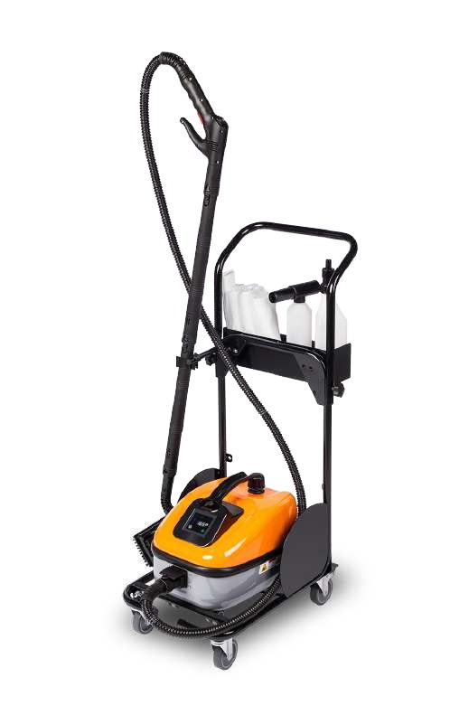

Pioneering 100% mobile waterless car cleaning in Kampala. No plumbing, no running water, no drainage, and no permanent structure—just an agile trolley wheeled directly to wherever you park.

All specialized polymer formulas, high-suction vacuums, and clean microfibre media on an agile wheeled trolley.
Vehicle ownership in Kampala comes with relentless challenges: fine red murram dust, muddy rains, and notorious city traffic. Keeping a vehicle spotless requires regular washing.
Yet traditional car washing bays present an exhausting trade-off. Motorists waste two to three hours every weekend sitting in dusty waiting sheds or idling in traffic. Vehicles are frequently scrubbed with dirty water buckets and abrasive brushes that scratch paint clear coats. Worst of all, conventional washing consumes hundreds of litres of precious municipal water and drenches residential driveways in soapy mud.
Mist Wheels was founded to flip the script entirely: you don't go to the washing bay—the bay comes to you. With our 100% waterless polymer cleaning system, we require no plumbing, no running water, and no drainage. Our technician simply wheels a compact mobile trolley straight to your parked vehicle—whether in your driveway, office parking slot, or an underground basement.
Combining modern polymer science, zero water waste, and total location freedom.
Specialised waterless lubricants surround and lift dust particles away from paint surfaces, wiping them cleanly onto microfibre towels without scratches or swirl marks.
While traditional washing bays consume up to 250 litres of water per car, Mist Wheels uses zero litres of running water, preserving Kampala's water resources.
No plumbing hookups, no water hoses across lawns, and zero muddy driveway run-off. Your parking bay remains completely dry and clean after we finish.
No permanent concrete ramps, bays, or sumps. Our entire operation is carried on an agile, self-contained mobile trolley that fits between parked vehicles.
Tell us where your car is parked in Kampala. Our mobile trolley arrives fully prepared to deliver a mirror-bright waterless clean.